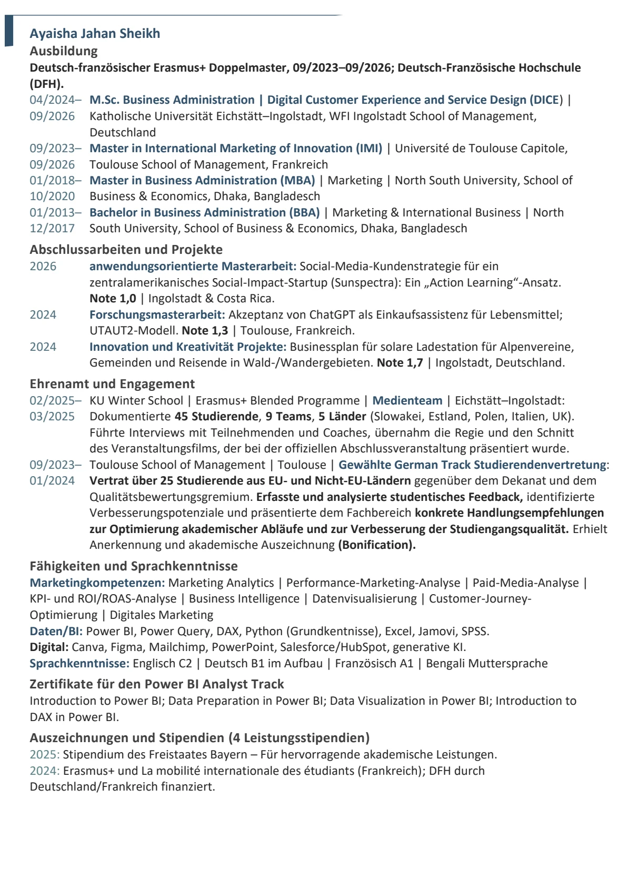

Curriculum Vitae
Choose my English CV or German Lebenslauf. Each PDF is two pages. Preview either version below, or download a copy for your records.
For a readable web version on any screen, read my online resume ↗.
English CV Preview · 2 pages


Deutscher Lebenslauf Vorschau · 2 Seiten
